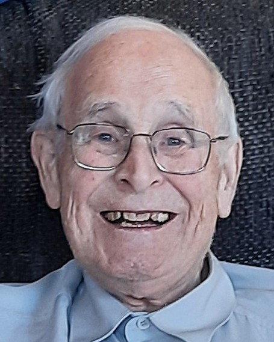

Dosent emeritus, dr. ing. Per Tveit døde 29. Juni, 94 år gammel.
Tveit ble født på Hornnes i Aust-Agder og vokste opp i Voss herad. Han ble utdannet til bygningsingeniør ved Norges Tekniske Høgskole i 1955. Deretter var han stipendiat ved Rheinisch-Westfälische Technische Hochschule Aachen og ved NTH der han ble dr.ing. i 1964. Tveit begynte å utvikle en ny type brokonstruksjon (nettverksbuebro) som ingeniørstudent ved NTH.
Fra 1962 tegnet han et par nettverksbuebroer, Håkkadalsbrua i Steinkjer og Boldstadstraumen bru i Vaksdal. Senere medvirket han i konstruksjonen av Limfjordtunnelen i Aalborg.
Han har ble lektor ved Ålborg universitetssenter i 1967 hvor han jobbet i 18 år. I 1985 ble han dosent ved avdelingen for datateknikk, Agder ingeniør og distriktshøgskole i Grimstad.
Per Tveit ledet avdelingen for datateknikk fra 1988 i nesten 10 år. Under hans ledelse steg antall datastudenter fra på det laveste 15 i klassen til fire klasser med til sammen 120 studenter. Derved ble avdelingen for datateknikk – senere Institutt for IKT – et sterkt kort for Grimstad i prosessen mot etablering av Universitetet i Agder i 2007.

Agder ingeniør og distriktshøgskole fusjonerte med andre høgskoler i Agder og ble til Høgskolen i Agder i 1994. Høgskolen i Agder ble organisert med campus i Kristiansand og campus i Grimstad. Den sterke stillingen til datasatsingen var avgjørende for å kunne starte et sivilingeniørstudium i IKT i 1997 og få til et doktorgradstudium i IKT. Per Tveits skapte forutsetningene for dette.
Som dosent emeritus fortsatte Tveit å forske og publisere om sin ungdoms oppdagelse – nettverksbuebroer. Nettverksbuebroen har kryssende hengestenger mellom bue og brobane og sparer over halvdelen av stålvekten i forhold til andre broer.
Som pensjonist reiste han tre ganger verden rundt og holdt foredrag. Det førte stil stor interesse for nettverksbuebroer. Det er bygget over 100 eksemplarer i Norge, Tyskland, USA, Japan og mange andre land.
Per Tveit fikk Kongens fortjenstmedalje tildelt på sin bursdag den 11. august 2013.
Per Tveit var en hedersmann som satte dype spor etter seg. Han er dypt savnet.
På vegne av kolleger ved Universitetet i Agder, Jose Julio Gonzalez, Folke Haugland og Morgan Konnestad